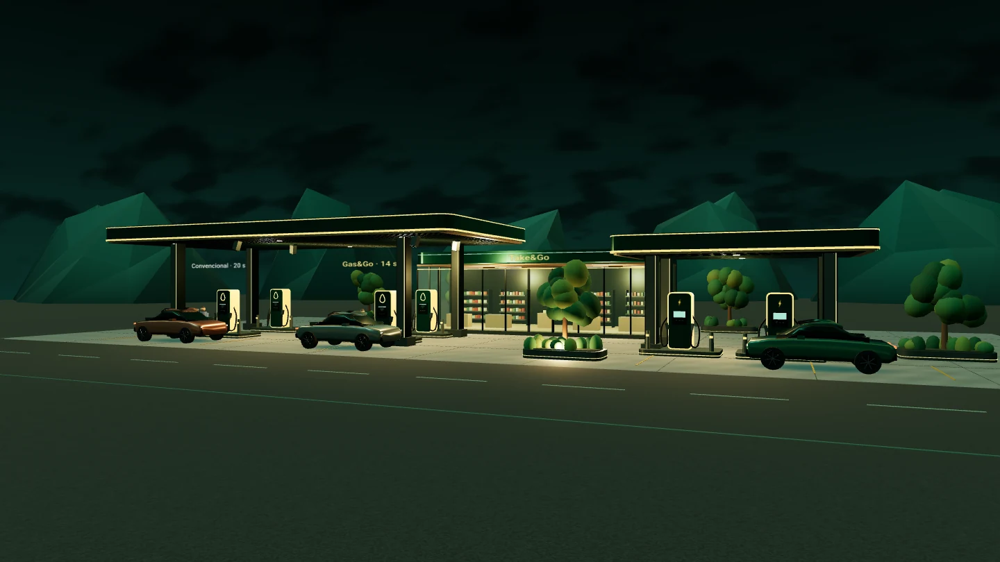

Gas&Go reúne la identificación del vehículo, la autorización del surtidor y el pago en una sola aplicación, para que repostar requiera menos pasos.
Pulsa un punto para descubrir la estación.
Servicios complementarios
Activa JavaScript para explorar la estación.